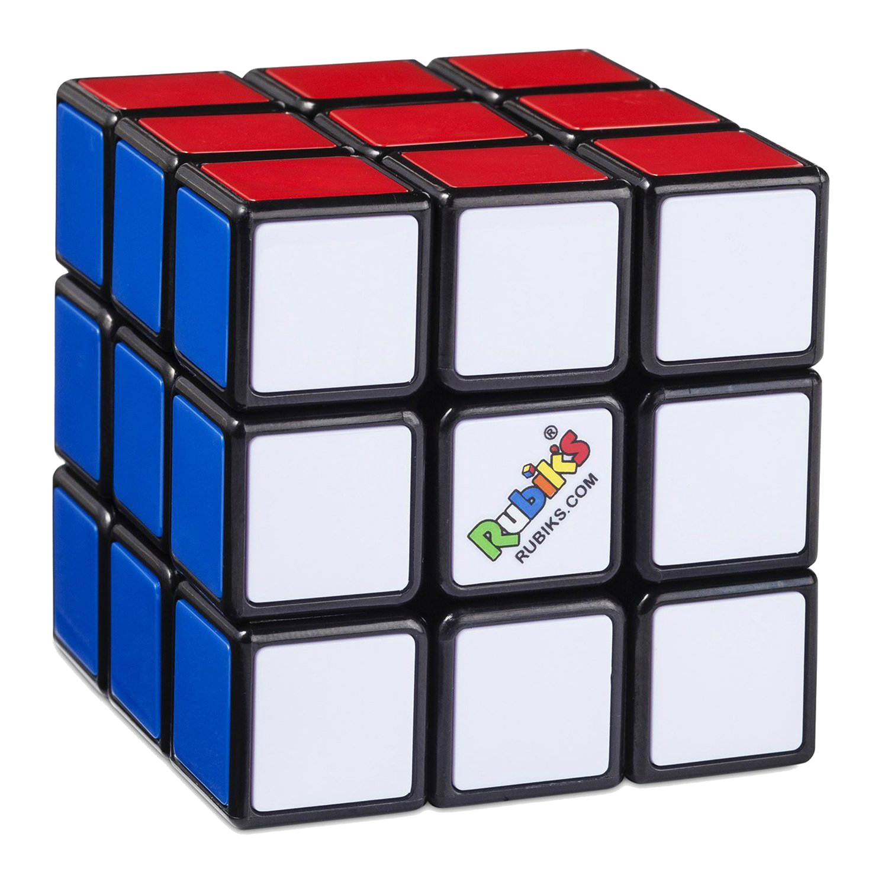
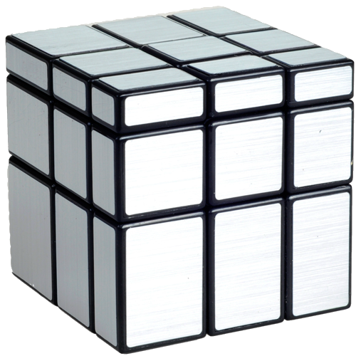
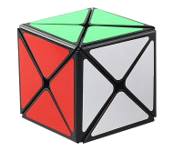
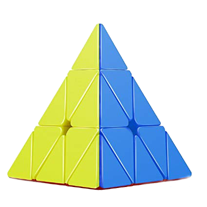
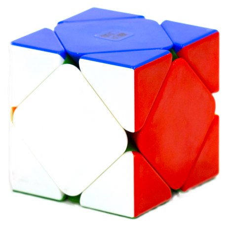
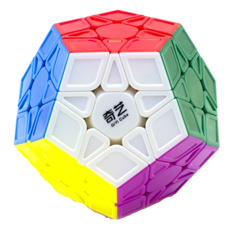
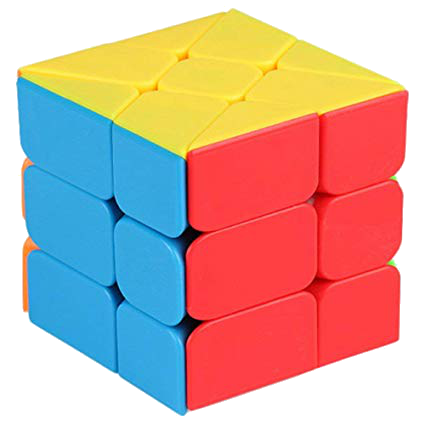

| Название |
Фотография |
Описание |
| Кубик-Рубик 3x3x3 |
 |
Кубик Рубика 3×3×3 — механическая головоломка, изобретённая в 1974 году Эрнё Рубиком. Головоломка представляет собой пластмассовый куб 3×3×3 с 54 видимыми цветными наклейками. Грани большого куба способны вращаться вокруг 3 внутренних осей куба. |
| Зеркальный Кубик-Рубика |
 |
Зеркальный кубик Рубика представляют собой разновидность извилистой головоломки и модификацию формы стандартного кубика Рубика 3x3x3, изобретенную в 2006 году. |
| Void Cube |
 |
Void Cube - это трехмерная механическая головоломка, похожая на кубик Рубика, с заметным отличием в том, что отсутствуют центральные части, из-за чего головоломка напоминает губку Менгера 1-го уровня. Ядро, используемое на кубике Рубика, также отсутствует, создавая отверстия прямо через куб на всех трех осях. |
| Кубик-Рубик 2x2x2 |
 |
Dino Cube - это кубическая извилистая головоломка в стиле кубика Рубика. Он был изобретен в 1985 году Робертом Уэббом, однако он не выпускался серийно до десяти лет спустя У него всего 12 внешних подвижных частей для перестановки по сравнению с 20 подвижными элементами на кубике Рубика. |
| Пираминкс |
 |
Пираминкс - это головоломка в форме правильного тетраэдра, подобная кубику Рубика. Каждая грань тетраэдра поделена на 9 правильных треугольников. |
| Скьюб |
 |
Скьюб — механическая головоломка в стиле кубика Рубика, состоящая из частей, которые вращаются и меняют своё положение. |
| Мегаминкс |
 |
Мегаминкс — головоломка в форме додекаэдра, похожая на кубик Рубика. Головоломка состоит из 62 видимых снаружи движущихся элементов, 50 из которых меняют своё местоположение друг относительно друга и 12 остальных — центров граней, тогда как в кубике таких перемещаемых частей всего 20 при 6 центрах граней. |
| Windmill Cube |
 |
Windmill Cube - аналог кубика Рубика 3х3, при вращении можно собрать фигуру, напоминающую Мельницу. ... Куб-мельница - довольно известный шейпмод кубика Рубика, похожий на фишер-куб. |